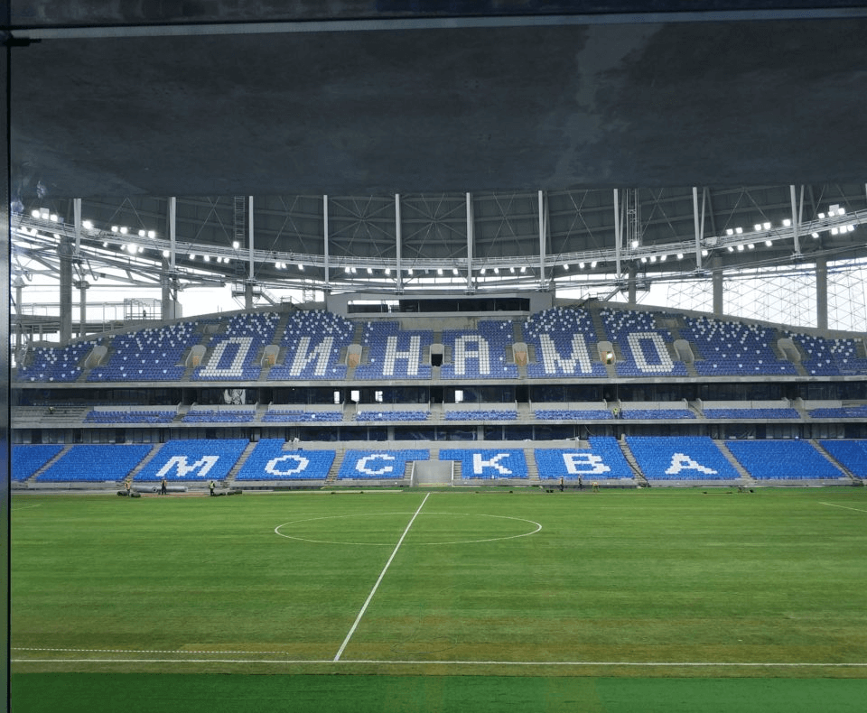

Проекты
Задача
В процессе строительства стадиона проект менялся несколько раз, поэтому требовалось много переделок. Перед нами стояла задача усилить конструкции и перекрытия, прорезать отверстия под инженерные коммуникации.

Задача
В процессе строительства стадиона проект менялся несколько раз, поэтому требовалось много переделок. Перед нами стояла задача усилить конструкции и перекрытия, прорезать отверстия под инженерные коммуникации.
Задача
В процессе строительства стадиона проект менялся несколько раз, поэтому требовалось много переделок. Перед нами стояла задача усилить конструкции и перекрытия, прорезать отверстия под инженерные коммуникации.
Отправить проект
на расчет стоимости бесплатно
Оставьте заявку и мы свяжемся с Вами в ближайшее время